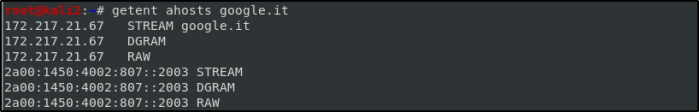
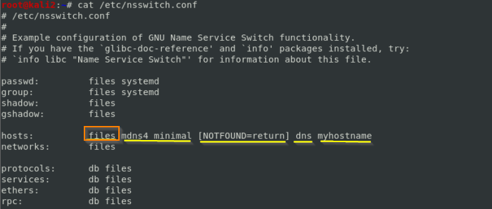
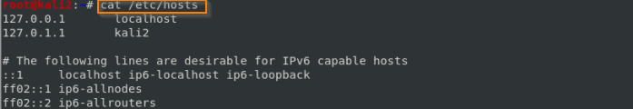

getent command
getent command:
The
getent command(get entries) don't ask directly to the name servers but resolve host names that behaves like a usual application, follow the order written in the
nsswitch.conf file(of Name Service Switch library) to convert name to IP addresses. Our local machine(example below) queries first the applicable
files( in our case /etc/hosts), then
mdns4_minimal and then use
dns(that use name servers).
 ahosts is one of the database supported by the Name Service Switch libraries that will give both ipv4 and ipv6 addresses.
 